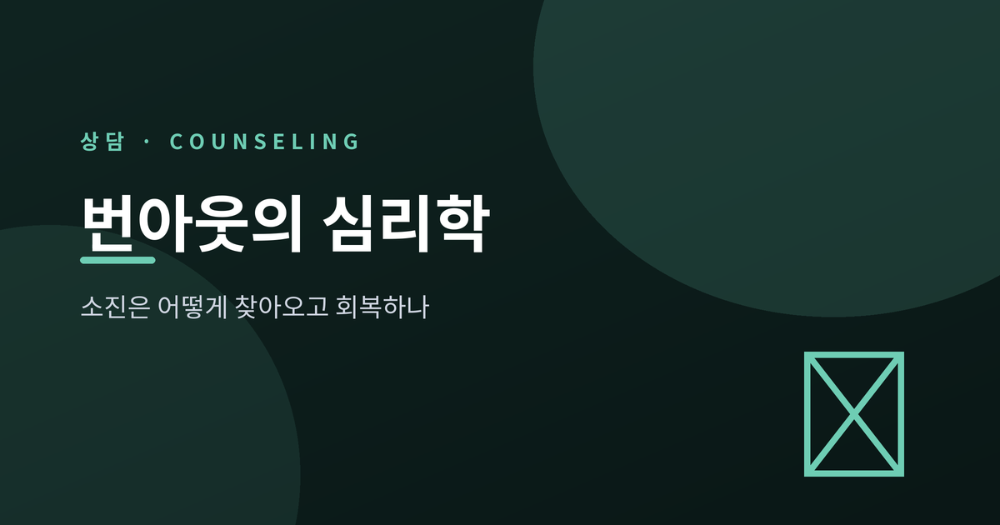
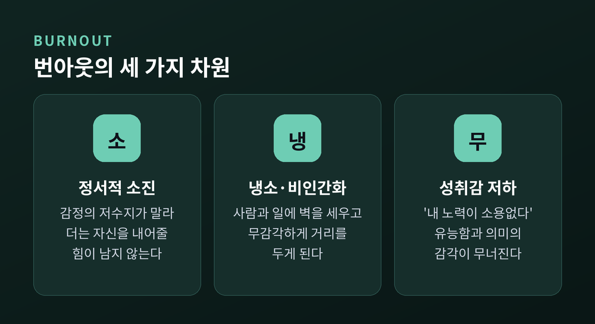
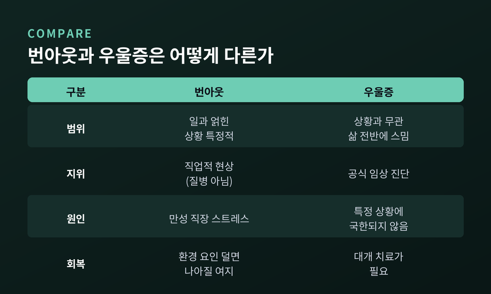
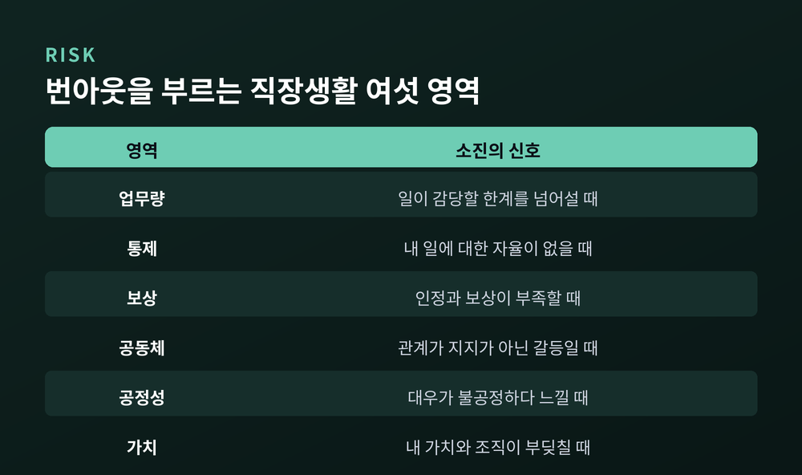
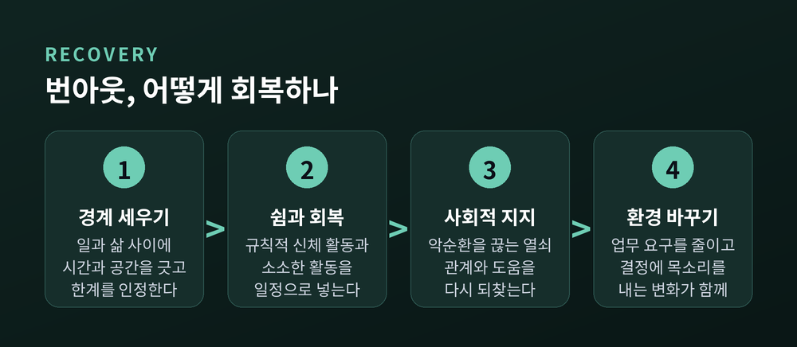

이번 글에서는 번아웃(burnout)을 심리학의 눈으로 정리해 보겠습니다.
먼저 결론부터 말씀드립니다. 번아웃은 게으름이나 나약함의 문제가 아닙니다. 오래 관리되지 못한 직장 스트레스가 사람을 서서히 태워 가는 현상입니다. 원인을 알면 회복의 길도 보입니다.
이 글은 일반적인 개념 소개일 뿐, 특정 개인에 대한 진단이나 처방이 아닙니다. 번아웃이 무엇이고, 어떻게 재며, 우울과 어떻게 다른지, 왜 찾아오고 어떻게 회복하는지를 차례로 살펴보겠습니다.
번아웃은 비교적 젊은 개념입니다.
이 말을 학문의 언어로 처음 끌어온 사람은 심리학자 허버트 프로이덴버거입니다. 그는 1974년 논문에서 번아웃을 "타인의 문제에 압도당할 때 전문직 종사자가 겪는 에너지의 고갈"이라 표현했습니다. 무료 진료소에서 헌신하다 스스로 소진을 겪은 경험이 그 출발점이었습니다.
처음에는 사람을 돕는 직업에서 주로 관찰되었습니다. 지금은 직업과 산업을 가리지 않고 나타납니다.
이 흩어진 관찰을 측정 가능한 개념으로 세운 사람이 크리스티나 매슬랙입니다. 오늘날 번아웃 연구의 표준 틀은 그가 정립한 세 가지 차원에서 시작됩니다.

매슬랙은 번아웃을 하나의 감정이 아니라 세 방향의 무너짐으로 보았습니다.
첫째는 정서적 소진입니다. 번아웃의 핵심 축입니다. 감정의 저수지가 말라, 더는 심리적으로 자신을 내어줄 수 없다고 느끼는 상태입니다. 일에서 에너지가 빠져나갑니다.
둘째는 냉소, 곧 비인간화입니다. 감정의 저장고가 바닥나면 마음은 자신을 소진시키는 대상으로부터 물러섭니다. 동료나 고객을 무감각하게, 때로는 거리를 두고 대하게 됩니다. 예전엔 마음을 쏟던 일에 이제는 벽을 세웁니다.
셋째는 성취감 저하입니다. 자신의 유능함과 일의 의미에 대한 감각이 무너집니다. "내 노력이 무슨 소용인가" 하는 생각이 자리 잡습니다.
세 차원은 대개 순서를 두고 찾아옵니다. 일반적으로 그려 보면 이렇습니다. 처음에는 그저 피곤합니다. 주말을 쉬어도 회복되지 않는 피로가 쌓입니다. 다음에는 마음이 식습니다. 사람과 일에 무감각해지고, 냉소가 자리 잡습니다. 마지막에는 스스로를 의심합니다. 무엇을 해도 소용없다는 감각이 남습니다. 물론 사람마다 순서와 양상은 다릅니다.
한 가지는 짚어 두겠습니다. 매슬랙은 많은 사람이 한두 차원에서만 높은 점수를 받는다고 말합니다. 세 차원이 모두 높은 '진짜 번아웃'은 흔히 알려진 것보다 드뭅니다. 그래서 지금 힘든 것이 소진인지, 이탈인지, 다른 무엇인지 찬찬히 살피는 일이 먼저입니다.
번아웃을 정량적으로 재는 대표 도구는 MBI(매슬랙 번아웃 척도)입니다.
가장 널리 쓰이는 의료·서비스직용 판형은 스물두 문항으로 이뤄집니다. 정서적 소진 아홉 문항, 비인간화 다섯 문항, 개인적 성취 여덟 문항입니다. 각 문항에 '전혀 없음'부터 '매일'까지 일곱 단계로 답합니다. 정서적 소진과 비인간화 점수가 높고 성취감 점수가 낮을수록 번아웃 수준이 높다고 봅니다.
정의의 무게를 더한 것은 세계보건기구(WHO)입니다. WHO는 2019년 번아웃을 국제질병분류 제11판(ICD-11)에 실었습니다. 정의는 이렇습니다. "성공적으로 관리되지 못한 만성적 직장 스트레스로 인해 발생하는 것으로 개념화되는 증후군."
주의할 점이 둘 있습니다. 하나, 번아웃은 질병이 아니라 '직업적 현상'으로 분류됩니다. 둘, 번아웃은 직업의 맥락에 한정된 말입니다. 삶의 다른 영역의 고단함까지 번아웃이라 부르지는 않습니다.
가장 자주 받는 질문일 것입니다. 소진과 우울은 겉으로 닮았습니다.
둘 다 기운이 없고, 의욕이 꺾이고, 집중이 흐트러집니다. 그러나 연구는 이 둘을 구별합니다.
가장 큰 차이는 범위입니다. 번아웃은 일과 얽힌 상황 특정적 현상입니다. 우울은 상황과 무관하게 삶 전반에 스며듭니다. 회복의 경로도 다릅니다. 번아웃은 환경이라는 유발 요인을 덜어 내면 나아질 여지가 큽니다. 우울은 유발 요인을 없애도 대개 치료가 필요합니다.

한 가지 덧붙이겠습니다. 2019년의 한 메타분석은 번아웃과 우울이 유의하게 상관되지만 여전히 구별되는 개념이라고 정리했습니다. 다만 오래 방치된 번아웃은 우울의 위험요인이 될 수 있습니다. 그러니 소진과 우울을 스스로 가르려 애쓰기보다, 오래 지속된다면 전문가의 평가를 받는 편이 정직합니다.
번아웃을 개인의 의지 문제로 돌리기 쉽습니다. 그러나 연구가 가리키는 방향은 다릅니다.
매슬랙과 라이터는 번아웃이 '사람과 직무의 불일치'에서 온다고 보았습니다. 그들은 번아웃을 예측하는 직장생활의 여섯 영역을 제시했습니다. 업무량, 통제, 보상, 공동체, 공정성, 가치입니다.
일이 감당할 한계를 넘을 때, 내 일에 대한 자율이 없을 때, 인정과 보상이 부족할 때, 관계가 지지가 아니라 갈등일 때, 대우가 불공정하다 느낄 때, 내 가치와 조직의 가치가 부딪칠 때 — 소진의 씨앗이 뿌려집니다.

핵심은 이렇습니다. 한 영역의 불일치만으로도 번아웃이 생길 수 있고, 세 영역 이상이 겹치면 번아웃은 신뢰할 만큼 확실하게 찾아옵니다. 그러니 지금 무엇이 나를 태우고 있는지, 여섯 영역에 비추어 살펴보시길 권합니다.
회복에는 지름길이 없지만, 방향은 분명합니다. 개인의 노력과 환경의 변화가 함께 가야 합니다.
첫째, 경계를 다시 세웁니다. 일과 삶 사이의 시간과 공간을 긋습니다. 자신의 한계와 감정을 인정하는 것에서 회복은 시작됩니다.
둘째, 쉼과 회복을 일정으로 넣습니다. 규칙적인 신체 활동과 저비용의 소소한 활동이 번아웃 회복에 도움이 된다는 근거가 있습니다. 운동은 스트레스와 불안에 특히 좋습니다.
셋째, 사회적 지지를 되찾습니다. 지지가 약한 사람일수록 소진되기 쉽고, 소진된 상태에서는 오히려 도움을 덜 구해 악순환에 빠집니다. 이 고리를 끊는 열쇠가 관계입니다.
넷째, 환경을 바꿉니다. 개인의 대처만으로는 한계가 있습니다. 업무 요구를 줄이고, 일을 스스로 재구성할 여지를 넓히고, 결정에 목소리를 내는 조직의 변화가 함께해야 오래갑니다.

개인 개입과 조직 개입 중 무엇이 더 효과적인지는 연구마다 엇갈립니다. 분명한 것은 하나입니다. 소진은 혼자 애써서만 풀리는 문제가 아니라는 점입니다.
끝으로 한 가지만 덧붙이겠습니다.
번아웃은 나약함의 증거가 아닙니다. 오래 성실했던 사람이 한계에 닿았다는 신호에 가깝습니다.
이 글은 스스로를 돌아보는 하나의 출발점일 뿐입니다. 소진이 오래 이어지거나 일상을 흔든다면, 그리고 우울이 의심된다면, 혼자 견디지 마시고 전문 상담사나 정신건강 전문가의 도움을 받으시길 권합니다.
불을 다시 지피는 일은 대단한 결심에서 시작되지 않습니다.
"태워 없애는 대신, 꺼진 자리에 다시 온기를 들이는 것."
오늘 조금 덜 일하고 조금 더 쉬는 그 작은 선택이, 회복의 첫 장작이 됩니다.